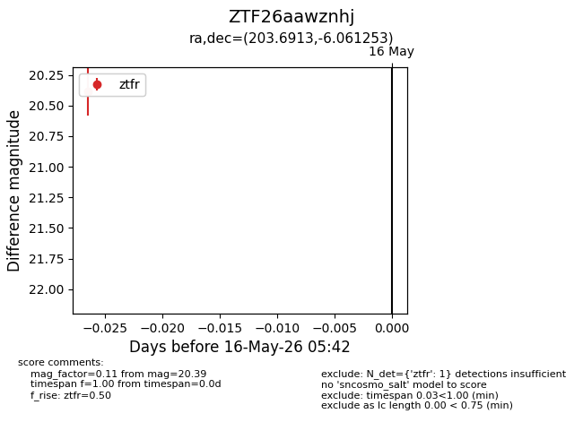
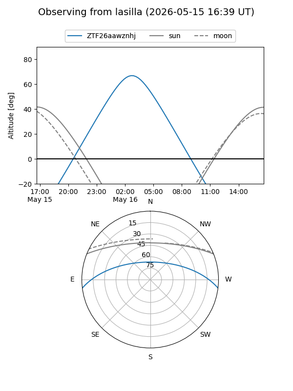
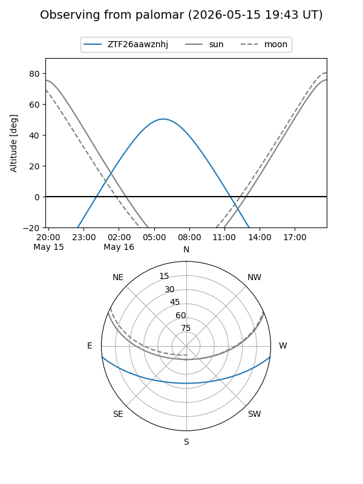

ZTF26aawznhj
Target ZTF26aawznhj at 2026-05-16 05:44
Aliases and brokers:
FINK: link
Lasair: link
ALeRCE: link
alt names
ZTF26aawznhj (ztf,fink_ztf)
Coordinates:
equatorial (ra, dec) = 203.6913,-6.06125
equatorial (HMS+DMS) = 13:34:45.91,-06:03:40.51
galactic (l, b) = (322.0429,+55.19470)
Flags:
Photometry:
last ztfr=20.39
1 ztfr detections
Lightcurve

Visibility


Additional plots